<<2015年5月 | トップページ | 2015年7月>>
2015年6月
自分にとって『特別な言葉』 ［瀧澤翼］
こんにちは～！
最近暑すぎて、学校から帰ると
ダッシュで冷蔵庫の扉を開けてしまう瀧澤翼です！
さぁ今回のテーマは「 自分にとって 『特別な言葉』 」ですね！
たまに勉強やダンスが思い通りにできないとき
「 あ～もう何もしたくない 」と思ってしまうことがあるんです。
そんなとき、必ず自分に言い聞かせる言葉があります。
それは「 ここで頑張れば、何かある！ 」です。
この言葉が僕にとっての特別な言葉です。
なぜなら、僕を好奇心旺盛な性格にしてくれた言葉だからです。
そしてもう１つ自分にとって特別な言葉があります。
それは「 夢は必ず叶う！ 」です！
「 叶う 」という漢字は、【 口に十 】と書くので
自分の夢を何度も語るという意味・・・という説があります。
これはお父さんから教えてもらいました！
初めて聞いたときはよくわからなかったけど、今はハッキリ理解できます。
僕の夢は、俳優になってハリウッド映画に出ることだから、
この言葉を信じて頑張ります！！！！
これからも、応援よろしくお願いしますm(_ _)m
と、いうわけで心をリフレッシュしに行ってきましたー！
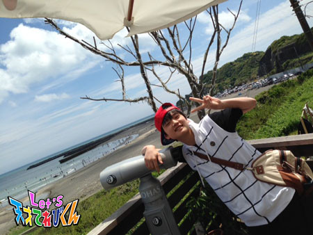
海の向こうに・・・Let's！！！！
投稿者:瀧澤翼 | 投稿時間:18時45分 | カテゴリ：てれび戦士 | 固定リンク
自分にとって『特別な言葉』 ［赤崎月香］
こんにちは ヽ(^▽^@)ノ
赤崎月香です。
山口県を舞台にした回では
『 花燃ゆ 』のみなさんが出演してくれました！！！！！
とっても楽しかったです ☆(*^o^)乂(^-^*)☆
山口どちゃもん♪ ふくぺらぶう
すぐにお腹がすいたー！って言うけど、
とってもかわいかった～♪
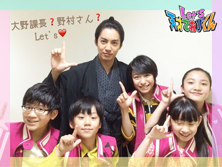
大野課長もかっこいいけど、
野村さんもステキでしたね！(*/∇＼*)キャ
「 お月ちゃん 」って呼ばれて
♪♪♪♪ Happy ♪♪♪♪
☆。・:*:・°★,。・:*:・°☆
自分にとって『 特別な言葉 』
◇ 食べ放題 ◇
◇ ご自由にお持ち帰りください ◇
すき ヽ(^◇^*)/
でも、ここは真面目に！！！！
私にとっての『 特別な言葉 』
◇ 会うは別れの始め ◇
意味は、簡単に言うと
出会った人とは、必ず別れる日が訪れる
この言葉を初めて知ったときは、
そんな悲しいことイヤだよーーーΣ(|||▽||| )
と思ったのですが、
少しずつ理解できるようになりました。
まだ13才だけど（もうすぐ14才）、
たくさんの人と出会い・・・
たくさんの人とさようならをしました・・・
ずいぶん前のブログにも書いたけど、
人と人の出会いを大切にしたい！！！！
後悔しないために、
出会えた人たちと、
今を一生懸命に楽しもうと思っています！！！！
たとえさようならのときが来ても
出会えたことに意味があると思うから！！！！
だから今は、この言葉を
悲しい言葉だと思っていません (*｀◇´*)/
☆。・:*:・°★,。・:*:・°☆
よしっ！！！！
おこづかいが大ピンチだから
父の日には、心のこもった言葉を
プレゼントしよう♪ (ｏ￣∇￣ｏ)ヘヘ
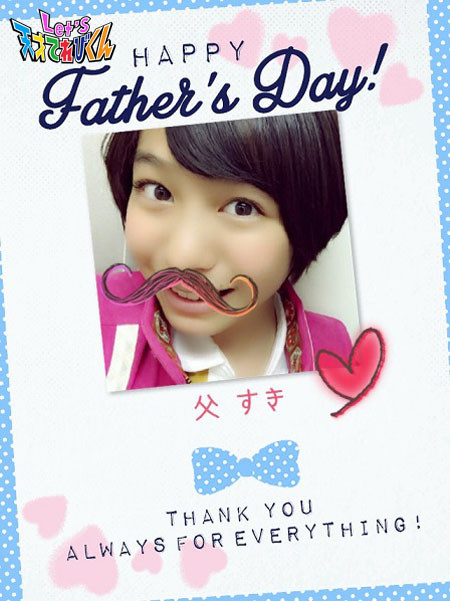またね～ヾ(*'-'*)
投稿者:赤崎月香 | 投稿時間:18時45分 | カテゴリ：てれび戦士 | 固定リンク
自分にとって『特別な言葉』 ［小西憧弥］
こんにちは！憧弥です(^-^)/
誕生日にいっぱいの人からおめでとう！を言ってもらったり、
プレゼントをもらいました。
うれしかったです。
ありがとうございました(^_^)v
この前、近くの田んぼへザリガニ釣りに行きました。
いつも網は使わないで、たこ糸とスルメと、
その辺りに落ちている木を竿がわりにして釣ります。
その日は確か・・・４匹、次の週は１匹釣れました。
思ったより釣れなかったけど、
やっぱり釣りは楽しいなぁー（≧∇≦）
最後はちゃんと元の場所に逃がしてあげました。
それになんと、その帰り道クワガタも見つけて、
テンションちょーー上がったーー (^_^)v
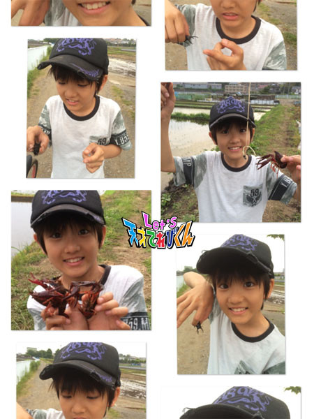
それでは、お題にいきます！
「 自分にとって 『 特別な言葉 』 」です。
特別な言葉で思いつくのは、
お父さんとお母さんと約束したことで、
『 やるときゃやる！ 』です。
苦手なこととか、イヤだなぁと思うこととか、
できないだろうなぁって思うことでも、
やらなきゃいけないってときには、一生けん命やる！
できるできないよりも、
一生けん命やることが大事だよ！っていつも言われてます！
僕もそう思うから、
これからも 『 やるときゃやる！ 』で頑張ります(^-^)/
投稿者:小西憧弥 | 投稿時間:18時45分 | カテゴリ：てれび戦士 | 固定リンク
やってみるもんだなぁ［齋藤茉日］
こんにちは～
茉日です ^ ^
今回のテーマは「 やってみるもんだなぁ 」です！
みなさんは何かありますか？
できないと思ってやったら意外と得意だったり ^ ^
難しい！と思っていたものが案外簡単だったり ^ ^
私は最近の出来事で、やってみるもんだなぁと感じたことがありました ( ´ ▽ ` )ﾉ
それは、、、
せきが止まらない日が続いて
市販の薬も効いている感じがしなくて病院に行ったんです ^ ^
先生が３種類の薬を出してくれました。
これで最低でも３つ薬を飲まなくちゃいけないですよね？？
そこまではいいんです。
そして、薬をもらうときがきました！
薬剤師さんが、
「 こちらの薬とこちらの２つの薬は朝、昼、夜１錠ずつで、
この薬は１回２錠、朝、昼、夜飲んでください 」
！(◎_◎;)
（計４錠。）
そ、そんなに飲むんですか！！
と思って聞いてました。。。
実は私、錠剤を飲むのが苦手なんです(>_<)
恥ずかしい！！(>_<)
それなのに、せき止めで出された薬は１日３回、計４錠！！
薬の説明してもらっているときは、母とクスクス笑っちゃいましたよ～
そんなに飲むんだな～って。
そして「 そんなに飲むんですね～～！！ 」と笑ったら、
錠剤苦手ですか？って聞かれちゃいました！
そりゃそんな質問したら聞かれますよね！笑
そこは素直に、苦手なんです。。
と言ったら薬剤師さんも笑ってました( ´ ▽ ` )ﾉ
「そーなんですか～！！
これを機に得意になってください！
ファイト！」
と言ってガッツポーズしてくれました ^ ^
はい！
と言ってガッツポーズをし返して、
そんな応援してくれるなんてうれしいな～なんて思いながら帰りました ^ ^
でも実際４錠飲むのはキツイな～
いつも錠剤飲むとき、私は口の中に３分ぐらい入れて溶けちゃうんです。。。
だから、キツイよな～～
なんて思いながらテーブルの上に並べて、ひたすら眺めてました。。
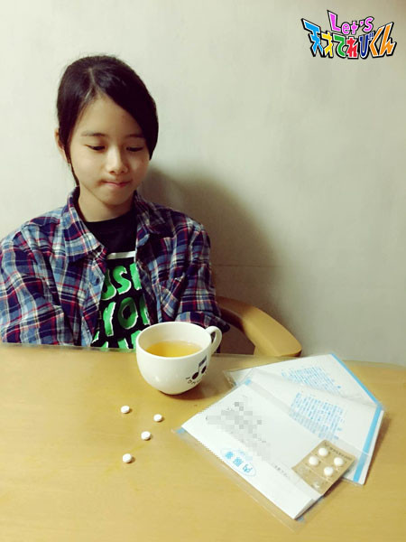
でも、結局は飲まなくちゃいけません！
勇気を出して一番小さいのをパクリ！
・・・（５秒）
ゴックン！
！(◎_◎;)飲めた！！！
過去最短記録！
５秒で錠剤飲めました！
もうそれだけで気分は絶好調！
この調子で！
と思いもう１つ！
・・・（10秒）
お！ さっきよりはためらっちゃったけど飲めた！！
こんな感じで残り２つも無事に飲めたんです！
わたし的には大きな進歩！成長！です (o^^o)
得意になるにはもうちょっとかかりそうだけど
苦手は克服できたと言っていいほどに成長しました (=´∀｀)人(´∀｀=)
我ながら！って感じです笑笑
それからは、なかなか飲めない日や、
飲みやすい日と、ばらつきがあったんですけど
最近では平均５秒！
長くて10秒です(o^^o)
そして口に入れるお茶の量も、少なくても飲めるようになってきて、
最初よりは随分マシになったと思います( ´ ▽ ` )ﾉ
ほんとにうれしいです！
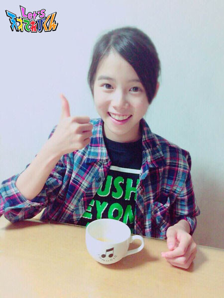
やってみるもんだなぁ～～
と、思いました( ´ ▽ ` )ﾉ
長文に付き合ってくれてありがとうございます(o^^o)
それでは！
今回はこのへんで～～
またね！
投稿者:齋藤茉日 | 投稿時間:18時45分 | カテゴリ：てれび戦士 | 固定リンク
やってみるもんだなぁ［笹原尚季］
こんにちは尚季です ヾ(＠⌒ー⌒＠)ノ
この前、瀧澤くんとNHKの食堂でご飯を食べました！
食堂のご飯は、どれもおいしくて、いつも何にしようか悩みます。
ちなみに僕は、海鮮丼を食べました♪
と～っても、おいしかったです☆
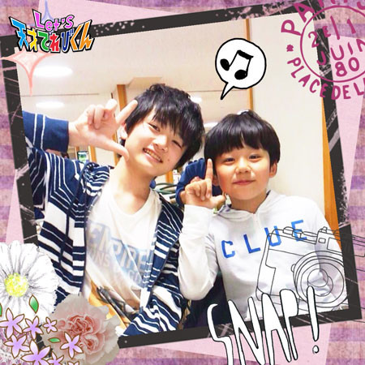
今回のお題は、「 やってみるもんだなぁ 」です。
この前、運動会がありました。
僕は、応援団がやりたかったので立候補したら応援団に入れました。
さらに、副団長にもなりたいなあと思って立候補したら
奇跡的に副団長になれました。
絶対無理かなと思っていたので、すっっごく！！うれしかったです (o^^o)
応援の練習は、ほぼ毎日のようにありました。
たまに休んでしまうこともあったし、大丈夫かなぁと心配になりました。
団員のみんなにも迷惑をかけてしまったけれど、
休んだときのことや、わからないことをていねいに教えてくれて
本当にありがたかったです。
本番の日は、すっっっごく緊張していたけど、
いいお天気で、みんなの競技中もせいいっぱい応援できて、
僕の応援した白組は残念ながら負けてしまったけれど、
本当にいい応援ができたなと思いました！
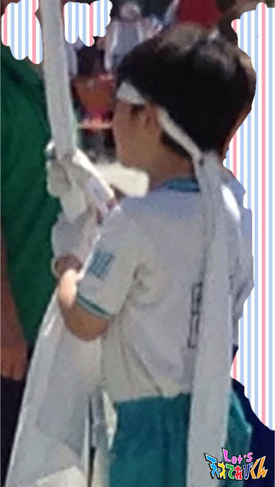
できなさそうなことも、とりあえずやってみるもんだなあって思いました。
何事もチャレンジしてみることで、新しい自分を発見できますよね♪
これからも、いろんなことにチャレンジしていきたいです！
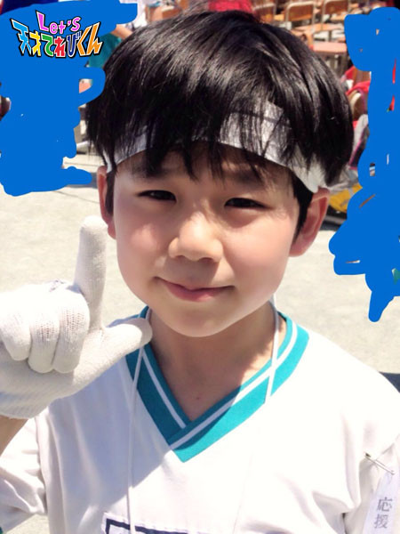
投稿者:笹原尚季 | 投稿時間:18時45分 | カテゴリ：てれび戦士 | 固定リンク
やってみるもんだなぁ［杉本瑛］
みなさん、グーテンモルゲン！（ドイツ語で「 おはようございます 」）
さあ、今回のお題は、
「 やってみるもんだなぁ 」です☆
私の「 やってみるもんだなぁ 」は
ドイツ語です (^o^)
最初、お家でパパとドイツ語を練習し始めたときは全然わからなかったけど、
100までの数字と『 りんごジュース 』などの単語が言えるようになりました☆
数字の数え方は20までは英語に似ていて、21から違います。
まず１を言ってから『 ＆（ウントと発音します）20 』のように、
大きい桁（けた）をあとから足して言います。
で、お家の都合でドイツに行ってきました。
ノイシュバンシュタイン城の前でLet'sポーズ！
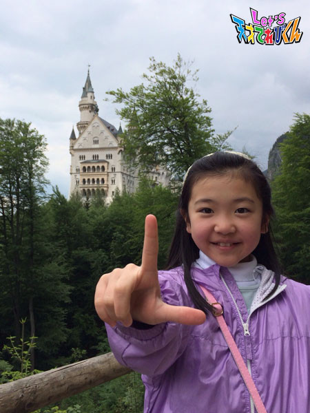
いざドイツに行ってみたら、通じるだけでなく、お返事もしてもらえました(^O^)
指で数字を表わす方法が違うから、ジェスチャーは通じません。
がんばって本当によかったです！
ドイツのバスの中で、素敵な出会いがありました！
隣に座っていた、ウサギさんのぬいぐるみを抱っこした女の子（≧∇≦）
その子のお母さんが、瑛にドイツ語で「 お名前は？ 」とききました。
「 瑛です 」と答えてから、緊張したけど、瑛もドイツ語で「お名前は？」とききました。
「 マリータです 」と答えてくれて、お友達になれました！！
記念に写真を撮りました。
かわいい☆*:.｡. o(≧▽≦)o .｡.:*☆
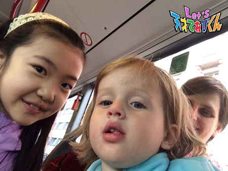
ほかにも、フランクフルトの広場で、エラちゃんとお友達になってシャボン玉で遊びました。
２人で夢中になっていたら、
トーマス君という同い年くらいの男の子にも参加してもらえました。
すごく楽しかったです。
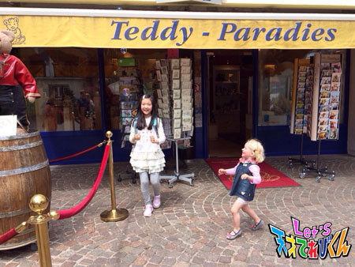
これからもいろいろな国の言葉を練習するぞーーーー！
投稿者:杉本瑛 | 投稿時間:18時54分 | カテゴリ：てれび戦士 | 固定リンク
やってみるもんだなぁ［辻村晃佑］
どうも辻村晃佑です！(*^^*)
いやーやっと中間テストが終わった！
何かから解放されたような気がします！
でも、けっこうすぐに期末テストだから今のうちにのんびりしよう・・・
さて本題です。
今回のテーマは「 やってみるもんだなぁ 」かー
やってみてよかったことは
もちのろんで、たくさんあります。
まずひとつめ、シーザードレッシングを食べたことです！
普段サラダにはドレッシングをかけないのですが、
シーザーサラダを食べる機会があって食べてみたんですよ！
そしたら・・・
「なんだこれおいしすぎる (°Д°)
なんで今の今まで食べなかったのだろう！」と思いました。
この経験から、時にはチャレンジが必要だと悟りました！
シーザーサラダ先輩ありがとうございます ( ；∀；)
ふたつめは握力を鍛えたことです！
中１のとき、握力が10kgだったんです。
それはさすがにヤバイな～、
でもこれからがんばれば握力を伸ばせるかもしれないなぁと思って、
あれこれ調べて、あれこれ試してみたりしたら
握力伸びちゃいましたねー( ´,_ゝ`)
なんと・・・・・・・・・
握力が・・・・・・
右手も左手も20kgになりました！
２倍ですよ！
このままいけば、高校卒業のときは60kgになるな！
自分が恐ろしいです ┐(´д｀)┌
まぁあくまで計算上ですけどね・・・
これからもやってみてよかったことをたくさん増やすぞー！
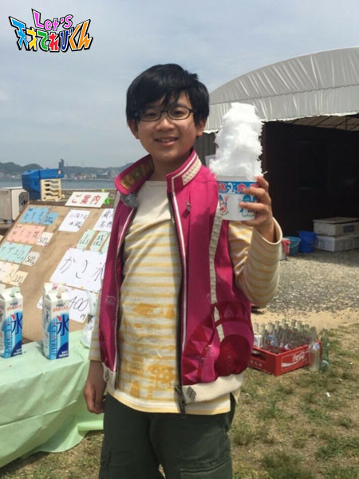
暑い日はかき氷がおいしいですね！
投稿者:辻村晃佑 | 投稿時間:18時45分 | カテゴリ：てれび戦士 | 固定リンク
やってみるもんだなぁ［飯島緋梨］
こんにちは
飯島緋梨です！
学校では図工の時間が一番楽しみです。
図工で猫のいすを作りました。
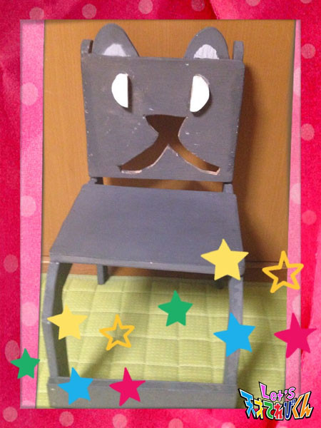
今回のお題は
「 やってみるもんだなぁ 」
緋梨のやってみるもんだな～は・・・
「 とびばこ！ 」
私は体育の中でとびばこがいちばん苦手です(>_<)
それは５年生のとき、ある日の体育で・・・
みんなはぴょんぴょんすごく上手にできるのに
自分だけできなかったらどうしよう～
不安でいっぱいでした(-。-;
まだ４段までしかできないのに(T ^ T)
しかも、なんと４段のとびばこには誰もいない！
なので失敗するのを覚悟で
５段のとびばこに挑戦してみました((((；゜Д゜)))))))
すると・・・ ヽ(；▽；)ノ
できた！！
そのときはすごくうれしくて、
「 やったーー！ 」
と、心の中で叫びました *\(^o^)/*
そのとき緋梨は
苦手なことでも挑戦してみることが大切なんだな～と思いました！
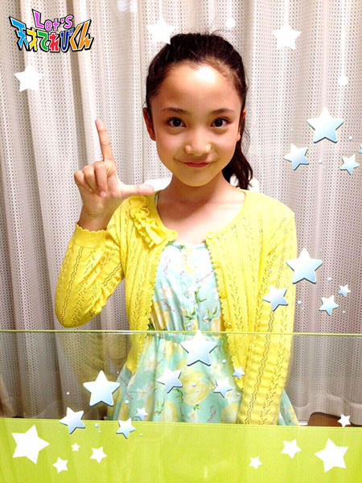
「 Let's やってみるもんだな(^_－)－☆ 」
投稿者:飯島緋梨 | 投稿時間:18時45分 | カテゴリ：てれび戦士 | 固定リンク
やってみるもんだなぁ［瀧澤翼］
こんにちはー！
最近暑くなってきて、いつも汗をかきっぱなしの瀧澤翼でーす！
暑くなってくると海や川などに行って水遊びしたくなりますね～（≧∇≦）
あ、そういえば、川で思い出しました！！
去年、長野どちゃもん「 はくばまる 」を仲間にするために
初めてキャニオニングに挑戦しました。
楽しかったなー^_^
川をすべる前に下をのぞくと高いので、結構、勇気が必要だったんです。
でも、いざすべると楽しいんです *\(^o^)/*
だから、怖がらずになんでもやってみるもんだなぁと思いました。
そこで今回のテーマは「 やってみるもんだなぁ 」です！！
学校ではプールの季節が近づいてますよね。
僕もプールは大好きなんですが、実は泳ぎが苦手なんです f^_^;
でも去年の６年生の夏にやっと50メートルを泳げるようになったんです！
これが僕の「 やってみるもんだなぁ 」です。
小さい頃から泳ぐことが苦手で、小学５年生までは25メートルも泳げませんでした。
でもある熱血な先生に背中を押されて、
25メートル・35メートルとだんだん距離を伸ばして
ついに６年生最後のプールで50メートルを泳ぎました！
でもまだクロールと平泳ぎでしか50メートル泳げないので
もっといろんな泳ぎ方にチャレンジしたいです！
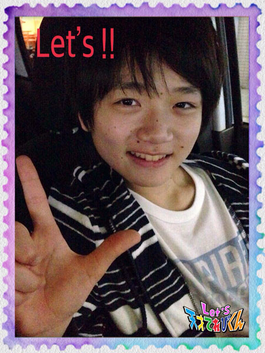
今年はもっと泳げるようになりたいですp(^_^)q
その前に腹ごしらえ腹ごしらえ ( ^ω^ )
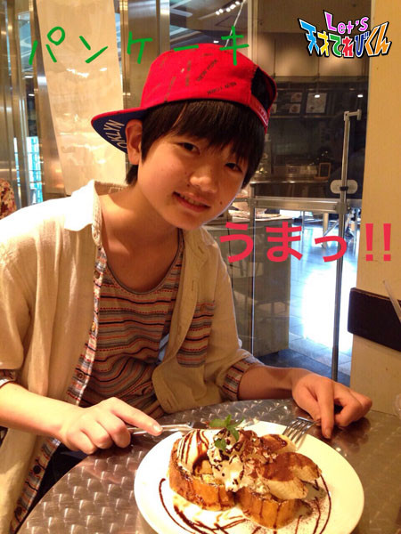
それでは、Let's！！
投稿者:瀧澤翼 | 投稿時間:18時54分 | カテゴリ：てれび戦士 | 固定リンク
やってみるもんだなぁ［桐畑カレン］
こんにちは。
カレンです(*^^*)
私の「 やってみるもんだなぁ 」体験は・・・
海外旅行に行ったときのことです(^^)
朝、ホテルの部屋で新聞を読んでいたお父さんが、
「あっ、〇〇ができたみたいだよ。よし、今日はここに行ってみよう！」
と、言いました。
お母さんも私も「いいね～！」
と、さんせいして行くことに。
桐畑家の旅行はいつものんびりなんです(^^;)
それは日本にもあって、子どもがいろんなお仕事を体験できる場所です。
とっても楽しいところだから、私もワクワクしていたんですが、
行くとちゅうのタクシーの中で、とってもとっても大変なことに気がつきました。
「あれ・・・もしかして・・・英語・・・だよね？」
それに気がついてからは、心ぞうがドキドキしてきて、
どんどん不安になって、タクシーの中でずっとだまってしまいました。
そんな私を見たお母さんが、「 めずらしく静かだね(^^) 」
と、のんきに言っていました(>.<)
いざ着いてから、周りをみると、
当たり前だけど外国の子どもたちばかりで、聞こえてくる言葉は英語です。
英語教室に通っているけど、私、しゃべれません(￣□￣;)!!
「 どうしよう(T_T) 」
と思ったけど、せっかく来たんだし・・・
その施設には日本でも行ったことがあるから、なんとなくわかるし・・・
みんな同じ子どもだからなんとかなるさ！
と、思いなおして、勇気をだしました。
そうしたら、やっぱり
楽しい～＼(^o^)／
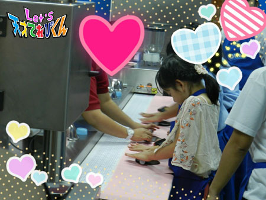
一生けんめい相手の言っていることを聞いたり、
ジェスチャーで伝えたり、知っている単語で伝えたりして。
そうしたら、相手もゆっくりわかりやすくお話してくれたりするんです。
いろんな職業を体験しながら、英語のお勉強にもなりました(^-^)v
おもしろかったのは、人気のある職業は、日本と同じだったことです(^^)
なんでも勇気をだすと、なんとかなるものかもしれません(^-^)v
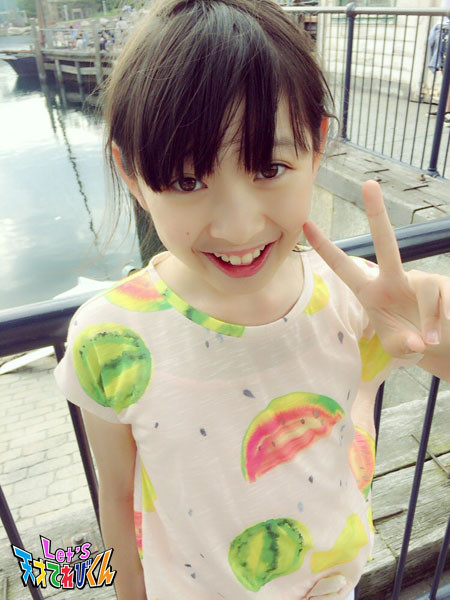
投稿者:桐畑カレン | 投稿時間:18時45分 | カテゴリ：てれび戦士 | 固定リンク
やってみるもんだなぁ［小澤竜心］
こんにちは！竜心です。
ぼくは今まで、いろんな挑戦をさせてもらいました。
最初、難しいかもー (((・・;)・・・って思っても、
教えてもらってやってみたら、意外とできたりして、
『 やってみるもんだなぁ～ 』って思ったことが、
いろいろあります。
長崎の『 中国獅子舞 』とか、
三重の『 忍者修行 』とか、
東京の『 お相撲 』のけいことか、
ぼくの苦手な『 犬の克服 』とか・・・(￣∇￣*)ゞ
去年の夏、ダンスの発表会があったんです。
けいこ中は、先生の振り付けが
毎日どんどん難しくなっていくんですけど、
やればやるほど、ちゃんとできていくんです。
やってみるもんだなぁ～！！
思い出いっぱいの発表会になりました♪
そのときの衣裳の写真です(*´∇｀*)
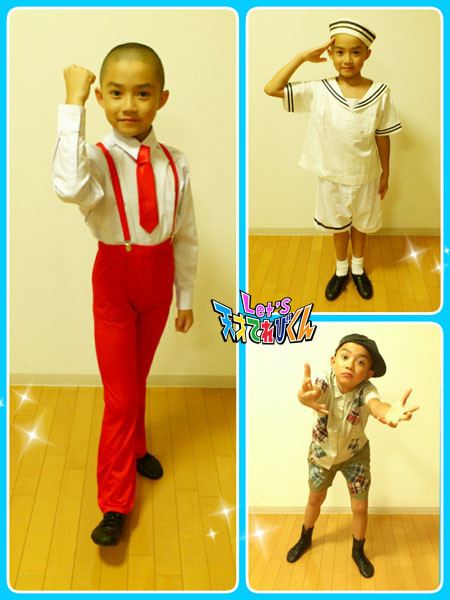
「 も～ダメだ～ 」って思うとそこで終わるけど、
「 やればできる 」って思えば、がんばれる o(^o^)o
なんでも、やってみるもんだなぁ～。
これからも、いろいろチャレンジするぞーヽ(^○^)ノ
Let's！
投稿者:小澤竜心 | 投稿時間:18時45分 | カテゴリ：てれび戦士 | 固定リンク
やってみるもんだなぁ［赤崎月香］
こんにちは ヽ(^▽^@)ノ
赤崎月香です。
この前、妹の運動会がありました。
そこで、小学生の頃、とっても仲良しだったお友達に久しぶりに会いました♪
別々の中学校に通っているので、
なかなか会えなかったけど
☆ やっぱり気が合う！( ^^)人(^^ ) ☆
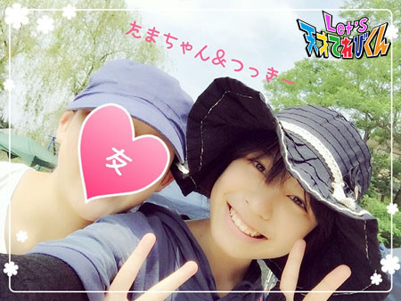
運動会は、暑いから行きたくないなぁ・・・
なんて思っていたけど、
なつかしいお友達に会えたから、
行って良かったー♪
行ってみるもんだなぁーＶ(=￣▽￣=)Ｖ
☆。・:*:・°★,。・:*:・°☆
今回は、「 やってみるもんだなぁ 」です。
やってみるもんだなぁー！
行ってみるもんだなぁー！
話してみるもんだなぁー！
見てみるもんだなぁー！
読んでみるもんだなぁー！
そんなこと、いっぱいあります。
毎日ある気がします。 (*¨)(*・・)うんうん
さっき書いた、
運動会でお友達に会えたこともそうです。
てれび戦士として、
いろいろなミッションをすることも
やってみるもんだなぁ！って、毎回思います♪
学校の委員も、イヤだなぁ・・・(￣Д￣;;
と、思いながらやってみたら、
意外と楽しかったり♪
全然興味がないお話の本を
お友達に勧められて、仕方なく読んでみたら
すっかりハマっちゃったり (*'▽'*)♪
なんとなく見た映画に、
かなり感動したり♪ (σｏ￣)ほぅほぅ
その中でも、勇気を出したことを書きます。
私が歩いていたら・・・
外国人の家族が地図を広げ、
キョロキョロ・・・ ^(・д・。)(。・д・)^
「 ＃＄☆％＝＊！ 」 ←外国語
どこの国の言葉かわからないけど、
とにかく困っている様子 o(´^｀)o
すれ違う人は、みんな知らんぷりだし、
私も聞いたところで、
答えることができないかもしれない・・・
☆ 考えました ☆ (￣ω￣;)
以前、私も似たようなことがあって、
親切な方に教えてもらい、
ありがとう！！と、思ったことを思い出しました。
よしっ！！！
聞いてみよう！！！ (ｏ￣∀￣)ノ
すると、私が行こうとしていた場所の近くで、
途中まで一緒に行きました。
最初はドキドキしたけど、
「 Thank you！ Thank you so much！（サンキュー！サンキューソーマッチ！） 」と、
何度も言われ、ブンブン握手をされ、
かたことだけど、英語が通じて良かった ♪(´▽｀)
英語って、世界中の人とお話ができるんですね！！
かたことすぎて、ちょっと恥ずかしかったーー (-"-;A
スラスラ英語が話せるようになりたいから、
英語の勉強をもっとしようと思えたし、
勇気を出して、話しかけて良かったな♪
やってみるもんだなぁーＯ(≧▽≦)Ｏ
またね～ヾ(*'-'*)
投稿者:赤崎月香 | 投稿時間:18時45分 | カテゴリ：てれび戦士 | 固定リンク
やってみるもんだなぁ［小西憧弥］
こんにちは！小西憧弥です。
いつもと違ってフルネームにしてみました。(^-^)/
最近、ほぼ毎日外で遊んでるからかな、
人に会うたびに「 黒くなったね～ 」って言われます。
言われるたびにプチショック・・・。
今回のお題は「 やってみるもんだなぁ 」です！
ずーっとロッククライミング？ ボルダリング？ がやってみたかったんだけど、
近くにする場所がなくて、やったことなかったんです。
そしたら・・・この前、武尊と一緒に映画を見に行ったとき、
お母さん達が「 体を動かす遊びないかなー 」って考えてくれて、
映画終わったあと、ジムに連れて行ってくれました。
入ってみると、部屋の壁が全部・・・ボッコンボッコンなの！！
簡単そうに見えるのに、コースによって持っていい石が決まってたり、
スタートとゴールの石の持ち方が決まってたり、
いろんなルールがあるって知りました。
やってみると、難しくて思うように進めませんでした。
悔しい・・・。
何回も何回もやってたら、指や腕が痛くて真っ赤っか！
でも、思ってた以上に面白くて楽しかったなぁ。
1時間があっという間に過ぎてしまいました。
やってみてよかった～（≧∇≦）
その次の日、体全体筋肉痛。
また武尊や友達と一緒に行きたいな。
それにもっともっとうまくなりたい！
次は、頑張るぞー！
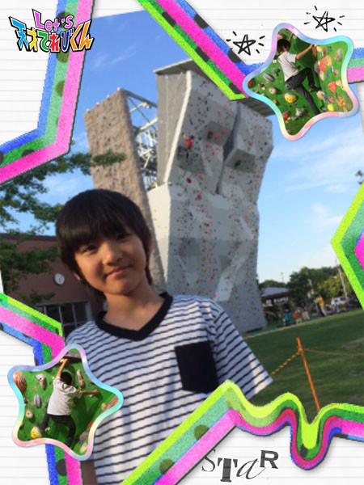
投稿者:小西憧弥 | 投稿時間:18時45分 | カテゴリ：てれび戦士 | 固定リンク
やってみるもんだなぁ［林武尊］
こんにちは 林武尊です。
この前、美容院に行きました。
僕のかみの毛を切ってくれる美容師さんが、
お店をやめちゃうって聞いて、急いで切ってもらいに行きました。
いつもゲームの話でもりあがって、
さんぱつしてもらうのがすごく楽しかったです。
さみしいな・・・ 残念だな～(/ _ ; )
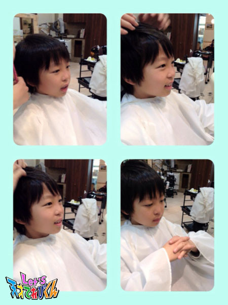
では、本題です。
今回は「 やってみるもんだなぁ 」です。
それがこの前あったんです！
それは、みんなと遊園地に行って、絶叫マシーンに乗ったことです！！
僕はジェットコースターとかが苦手で遊園地に行っても、あまり乗りません。
でも、「ジェットコースターこそ、遊園地のだいごみだよ」と
みんなにすすめられて、勇気を出して乗ってみたら・・・
すっごく楽しかった（≧∇≦）
この時、何事もやってみるもんだな～って思いました。
みなさんも、嫌なことでも勇気を出して挑戦してみてください。
きっと楽しいですよ(^O^)
投稿者:林武尊 | 投稿時間:18時54分 | カテゴリ：てれび戦士 | 固定リンク
やってみるもんだなぁ［原田明莉］
☆ Hello ☆
明莉です！
空手の東京都大会がありました！
明莉がいつも行ってる全国大会とは別の全国大会につながる試合でもありました！
3位になると、関東大会にでられるのです！
結果は・・・
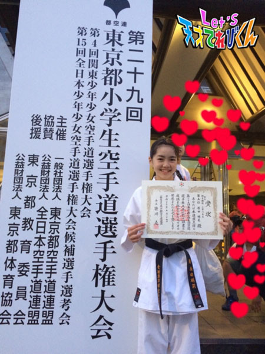
5位
ほんと、悔しかったです。
あと1回勝てば、関東大会。
2回勝てば、全日本だったのに・・・。
今年中にあと1回全国大会とその予選があるので頑張ります！
毎日、空手を意識していきたいです！
ではではー
本題に入ります！
今回のテーマは
「 やってみるもんだなぁ 」
です！
そーですねー
やっぱやっぱやっぱやっぱやーっぱ
空手です。
空手の話ばっかですいません f^_^;
空手を始めたきっかけまでさかのぼるんですが・・・
ある日、
お兄ちゃんが、バレンタインで
「いつもお世話になってるから！」と、
道場の子からチョコや手作りお菓子をたくさんもらってきたんです！
明莉「お菓子ちょーだい！」
兄「ヤダよ！」
明莉「ちょーだいよ！ ねーぇーーー」
兄「そんなに欲しいなら、お前も始めればいいじゃん！！！」
明莉「わかったー、じゃー始める！」
といい、私は空手を始めました！
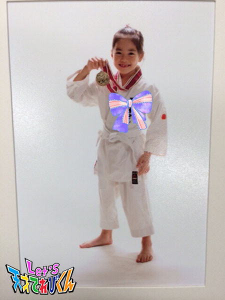
始めると、本当に空手が楽しくて楽しくてしょうがなくて！
本当に始めてよかったなー！
って思いました！
思いつきでもやってみるもんですね！
今でも、
空手の楽しさを教えてくれた先生や先輩には感謝感謝です！！！
みなさんもー
★Let's try★
投稿者:原田明莉 | 投稿時間:18時54分 | カテゴリ：てれび戦士 | 固定リンク
○○県が気になる［瀧澤翼］
こんにちは！
タキツバこと瀧澤翼です！
さぁ、早速今回のテーマに行きましょう！
「 ◯◯県が気になる 」かぁ・・・
最近どんどん暑くなってきて夏に近付いてきましたね。
毎年夏になると行きたいなぁって思う場所があります。
それは沖縄です。
そう、僕が気になる県は沖縄県です！
去年、家族で行った沖縄旅行は思い出深い旅行でした。
楽しかったなぁ！
沖縄にはいろいろな名物や名産品がありますが
定番なのは何と言ってもシーサーですよね！
ここでシーサーの豆知識！！！！！！！！！
実はシーサーにはオスとメスがいるんです！
その見分け方は、
口を開けている方がオスで、口を閉じている方はメスなんです！！
それとオスは右に、メスは左に置くのが正しい置き方なんですって。
知ってましたか？
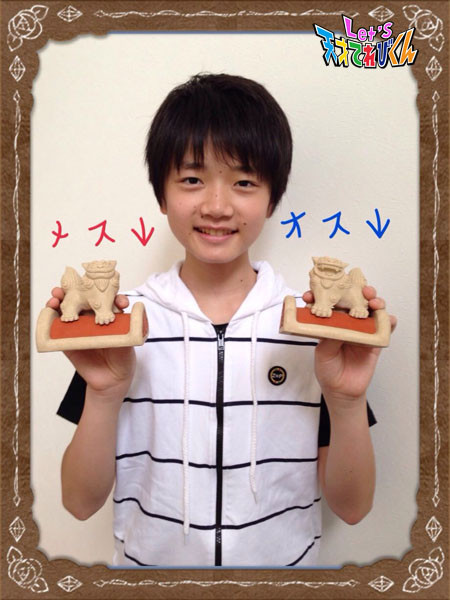
それと沖縄にはエイサーという伝統芸能がありますね。
僕は沖縄県の人たちと一緒に太鼓を叩きながら
「イーヤーサッサー！」「ハーイーヤー！」と言いながら踊ってみたいです！
沖縄県にはまだ気になることが山ほどあるので
どんどん知りたいと思います！！！！
Let’s 沖縄県！！
投稿者:瀧澤翼 | 投稿時間:18時45分 | カテゴリ：てれび戦士 | 固定リンク
○○県が気になる［齋藤茉日］
こんにちは～
茉日です^ ^
今回のテーマは
「 ○○県が気になる 」です^ ^
私が気になっている県は『 兵庫県 』です！
兵庫県は方言がとってもかわいくって好きだからです *\(^o^)/*
「 私ね、」ということを「 うちなあ、」って言ったり、
「 なにしてんの？ 」ということを「 なにしとう？ 」と言ったりするんですよね？ (o^^o)
大阪も「 うちなあ 」って言っているのを聞いたことがあります *\(^o^)/*
「 なにしとう？ 」はあんまり聞いたことがないかな？
なんだか言われてみたいです (o^^o)
言ってみたい(o^^o)という気持ちもあります^ ^
私は生まれも育ちも埼玉県なので
方言をしゃべったことがありません >_<
なので、しゃべってみたいなと思います^ ^
そんな憧れの方言がかわいい、兵庫県がいま気になっています (o^^o)
それでは今回はこの辺で！
またね♪
投稿者:齋藤茉日 | 投稿時間:18時45分 | カテゴリ：てれび戦士 | 固定リンク
○○県が気になる［笹原尚季］
こんにちは！
5年生の学校生活を満きつしている笹原です☆
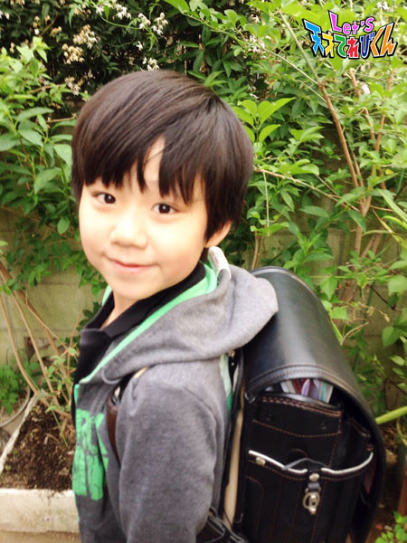
今回のお題は「 ◯◯県が気になる 」です。
僕の気になる都道府県は、京都です(*^_^*)
京都に行きたいわけは、
まず行ったことがなくて、
テレビで見るととても人気のある土地だからです。
あと、京都の本場の和菓子を食べてみたいのと、
二条城・清水寺・金閣寺・銀閣寺などに行きたいからです！！！！！！
あと、京都のどちゃもんがどういうどちゃもんか、調べたいからです(o^^o)
やっぱり舞妓さんみたいにキレイな着物を着ているのかな？
海外からも観光に来る人気の場所、ぜひ一度行ってみたいな～～♪
投稿者:笹原尚季 | 投稿時間:18時45分 | カテゴリ：てれび戦士 | 固定リンク
○○県が気になる［飯島緋梨］
みなさん、こんにちは^o^
飯島緋梨です！
5月の大型連休に川に遊びに行きました。
いとことバーベキューをしたり
川でイカダに乗ったり楽しかった！
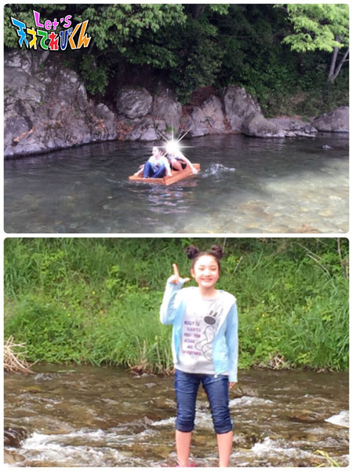
でもまだ5月なのに
こんなに暑いってどういうこと？？
というくらい暑すぎる Σ(￣。￣ﾉ)ﾉ
学校でも、すいとうが手放せません …>_<…
みなさんも水分をよくとって、熱中症には気をつけてくださいね！
今回のお題は
「 ○○県が気になる（＾ω＾）」
今まで、どちゃもんをさがしに
たくさんの都道府県に行ってきたけど、
どこもすごくいい所だった！！
おいしい食べものがあったり、
私の知らなかったことがたっくさん♪（ｖ＾＿＾）ｖ
もう一度、家族で行きたいなo(^_^)o
そして！
今行ってみたい県は
じゃーん (^з^)-☆
「 愛媛県 」
これには理由があるんです(^_^)
実は愛媛県には青島という、
猫好きにはたまらない！
猫がたくさんいる島があるそうです(=ﾟωﾟ)ﾉ
私はこの前、このことを知ってすご～く行きたくなりました( ^ ^ )
なんとそこには約100匹以上の猫が住んでいるそうです！！！！
うそーーーー！？！？
それなのに、住んでいる人は16人くらいしかいないんだって。
それでも、島民全体でかわいがって育てているんだって(^_^)
行ってみたーい！！
てれび戦士のみんなで行って
島でキャンプをして
お魚を釣って、猫ちゃんにご飯をあげたいな！
投稿者:飯島緋梨 | 投稿時間:18時45分 | カテゴリ：てれび戦士 | 固定リンク
○○県が気になる［辻村晃佑］
こんにちは、辻村晃佑です！
もう6月かー早いなー
ついこの前、進級したばかりなのにね（笑）
今回のテーマは、気になる都道府県だー
もちろん気になっている県はたくさんありますよ！
1県目は、鳥取県です！！！
やっぱり鳥取砂丘には行ってみたいですね！
砂にうもれたり、砂丘をいっきにザーッて感じにすべりたい！ヾ(*´∀｀*)ﾉ
そして鳥取県を代表するくだもの、二十世紀梨です！
なんとこの梨には100年以上の歴史があります！(゜д゜)
そんなにも歴史がある梨を食べてみたいなーーー
あと他にも鳥取バーガーや梨カレーなど、おいしそうなものばっかりだ！！！
やっぱり鳥取は気になるなーー(・∀・)
2県目は山梨県です！
有名なのは富士山！ だけど、山梨で行ってみたい所があります！
それは昇仙峡（しょうせんきょう）です！
富士山もいいけど、昇仙峡の景色も好きなんです。
特に、山梨には、秋に行ってみたいです。
まず昇仙峡は、秋の紅葉がめちゃくちゃきれいだからです！
そして山梨といえばくだもの！
桃、ぶどう、梨、これ全部、山梨の秋の味覚です！
たくさん食べたいですね！
あと、ご当地グルメのほうとう、もつ煮、トマト焼きそばもおいしそうヽ(*´∀｀)ノ
以上の2つの県が、今僕が気になっている県です！
いつか行きたいなー
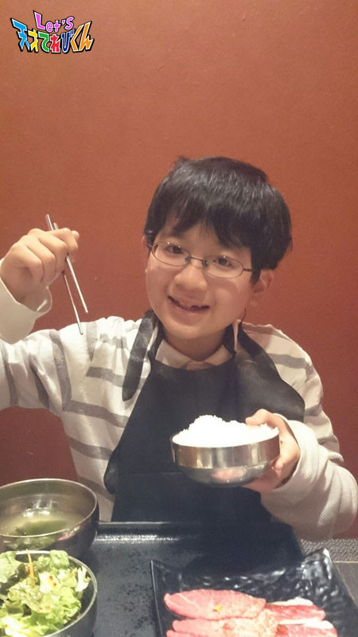おいしいものを食べると元気がでまーすヽ(*´∀｀)ノ
投稿者:辻村晃佑 | 投稿時間:18時54分 | カテゴリ：てれび戦士 | 固定リンク
○○県が気になる［桐畑カレン］
こんにちは。
カレンです(*^^*)
やっぱり私が気になる県は、
鹿児島県！
屋久杉です(*^^*)
私たちが生まれるはるか昔から、そこにあり続けているって、すごいことだと思うんです。
いろんなことを見てきて、聞いてきて、感じてきたんです！
気になります！お話してみたいです！
ぜったいに会いに行くぞ～！！
歴史を感じられるものがたくさんある京都も気になります。
赤ちゃんから3才のときまで住んでいたそうなんですが、
まったく覚えてないんです(;_;)
ただ「 京都のこんぺいとう 」が好きだったことだけ、なんとなく覚えています(^^;)
こんぺいとうはお星さまみたいな形で、色がかわいくて、
お口に入れると、ジュワってなります＼(^-^)／
プチじょうほうだけど、こんぺいとうは2週間くらいかけて作られるそうです。
「 作るというより育てる 」という職人さんの言葉を聞いて、ハッとしました。
ものじゃなくて、命なんだなって思いました。
昔からあるものをこわさないように、
もしこわれたらなおしてあげて、守っていく。
伝とうを守って、受けついでいく。
日本にはそういうものがたくさんあるような気がします。
どちゃもんもそうですよね！
だから、仲間にできなかったどちゃもんや、
超次元帝国にすいこまれてしまったどちゃもんのいる県が気になっています(>_<)
最後にもう1県、気になる県は・・・
うどん県！
1年生くらいのときだったかな？
テレビで初めて聞いて、
「うどん県？！そんな県があるの？！すごーい。おいしそう～＼(^o^)／」
と感動しました。
実はそれ、香川県だったんです。
今ならわかるけど、そのときは信じてしまいました(^^;)
香川といえば、さぬきうどん♪
うわさで、水道のじゃ口から、うどんのおだしがでてくるらしいと聞いたこともあります。
すごーい＼(^o^)／
本当かな～。
ぜひ、確かめてみたいです！
投稿者:桐畑カレン | 投稿時間:18時45分 | カテゴリ：てれび戦士 | 固定リンク
○○県が気になる［林武尊］
こんにちは、林武尊です。
みなさんは母の日のお祝いをしましたか？
ぼくは、ギョウザを作りました。
見た目はあまり良くなかったけど、お母さんは「 すごーくおいしい！ 」と、
たくさん食べてくれたよ(^o^)/
おはしもプレゼントしました。
大切に使ってね～♪
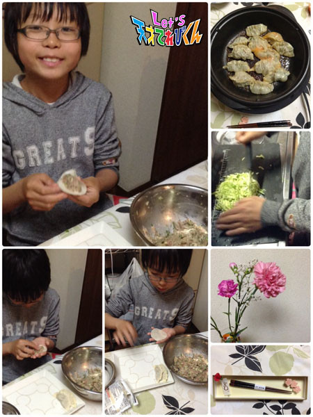
では本題へ。
僕が今気になっている都道府県は・・・
ズバリ、岡山県と鳥取県です。
僕は小さいとき、インドネシアのバリ島に住んでいたけど、
生まれたのは岡山だそうです。
今もおばあちゃんの家があるから1年に3回は必ず行きます。
この前も3日間だけだったけど、行くことができました。
毎朝、うぐいすの声で目がさめて、気持ちよかった～
それから大好きなラーメン屋さんがあって必ず行きます！
あと、冬は温泉の近くにゲレンデがあって
そこでスキーやスノーボードで遊びます。
遊び終わったら温泉に入って体を温めるんです。
体が温かくなったら千屋牛（ちやぎゅう）のしゃぶしゃぶを食べます。
おばあちゃんの家は岡山の北の方なので、鳥取県にもよく行きます。
この前はフラワーパークへ行きました。
ドームの中に入って梨ソフトクリームを食べたり、
フェルトで鳥を作ったりしました。
今度は鳥取砂丘や大山寺（だいせんじ）にも行きたいです。
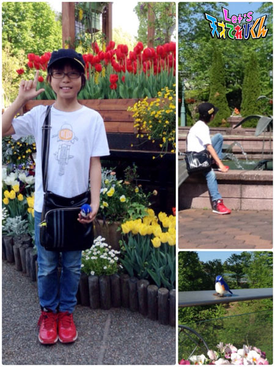
岡山も鳥取も自然がたくさんあって、
空気が気持ちよくて大好きです。
いやされるよ～
だから岡山と鳥取のどちゃもんは絶対に絶対に仲間にしたいです(￣^￣)ゞ
投稿者:林武尊 | 投稿時間:18時45分 | カテゴリ：てれび戦士 | 固定リンク
○○県が気になる［杉本瑛］
皆さん！オラ☆（スペイン語のこんにちは）
杉本瑛です。
今回のお題は【 ○○県が気になる 】です。
私が気になる県は大分県。
なぜかというと、「 ゆふいんの森 」という列車が走っているからです！！
私はパパの影響で、電車が大好きなんです～♪
「 ゆふいんの森 」は車体が緑色で、電車の顔がふんわりした丸い形で、
座席は車体と同じ緑色で、床が木張りで、乗っていて落ち着くインテリアです(^O^)
窓からの眺めも絶景だから、小さい頃に「 ゆふいんの森 」に乗ったとき、
眺めに見とれてて、お母さんに呼ばれるまで駅に着いたって気づかなかったの。
でも、あの頃は小さかったから、車体について全然覚えてなくて。
だからもう1回乗ってみたいの～
大分県は別名『 おんせん県 』と呼ばれていて、
「 ゆふいんの森 」も湯布院という温泉地まで走って行きます (*^^*)
瑛は入浴剤も好きだけど、やっぱり温泉そのものが好き～（≧∇≦）
行きたーーーーーーーい（＾Ｏ＾）
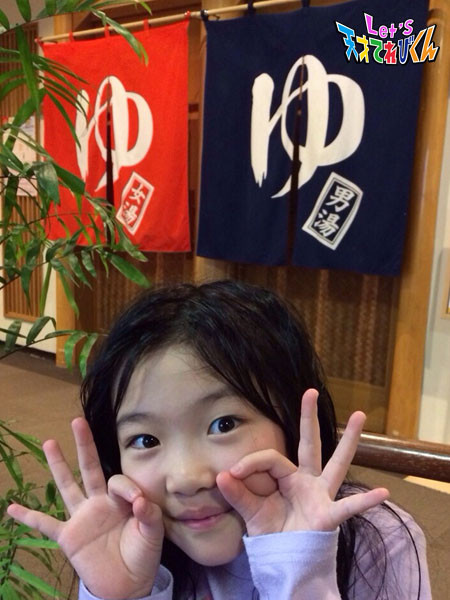
投稿者:杉本瑛 | 投稿時間:18時45分 | カテゴリ：てれび戦士 | 固定リンク
ページの一番上へ▲